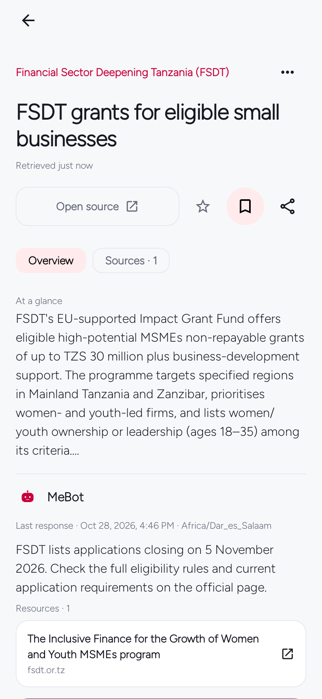
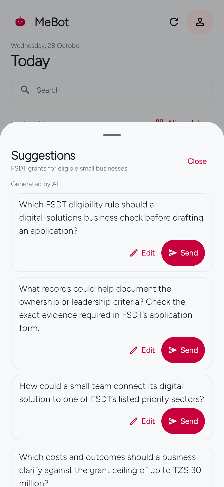
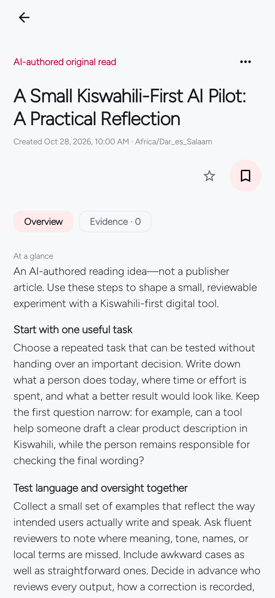
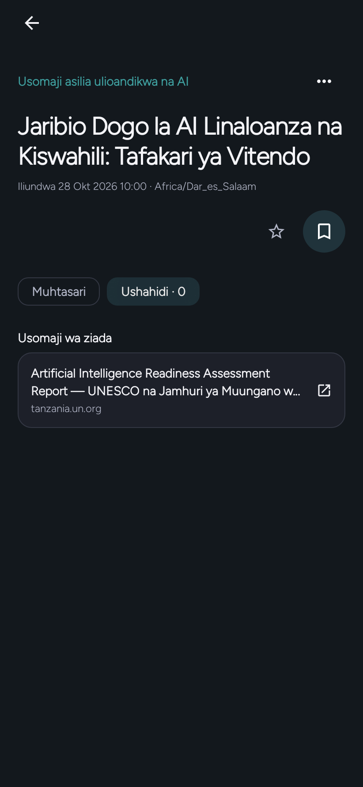

MeBot tasks
Using MeBot
Choose what you read and which optional tools to use.
Step 1 of 7
Choose topics
Select the updates you want and narrow them by interest or location.
Open the guide →Step 2 of 7
Set About You
Set interests and region under About You. Review which notes each module may use, change those choices, or leave personal context empty.
Open the guide →Step 3 of 7
Read and check sources
Browse source-checked grants, jobs, contracts and scholarships. Publication dates and application deadlines appear separately when available. Confirm current eligibility, dates and requirements on the official listing.
Open the guide →

Step 4 of 7
Ask a follow-up
With an AI provider connected, open the story’s question sheet. Choose Send to ask a question, or Edit to change the draft first. Opening the sheet alone sends nothing.
Open the guide →

Step 5 of 7
Open an Original Read
For You collects sourced stories around topics you choose. Original Read is a separate, longer AI-authored piece with its Created date—not a publisher date. Optional further reading is separate from the reflection and does not verify it by itself.
Open the guide →

Step 6 of 7
Choose language and appearance
Choose English or Kiswahili under You → Personalization → Language. In Appearance, select system, light or dark mode, an accent colour, and one of four page styles.
Open the guide →

Step 7 of 7
Use local tools
Set an alarm or start a Focus session; local tools remain available without an AI connection.
Open the guide →